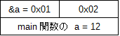
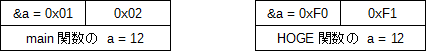
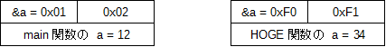
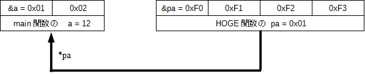
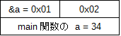

アクティビティ: C言語のポインタ
学習項目: [6] 活用例(1) 関数へのポインタ渡し
ここからはポインタ変数の活用方法についていくつか例を挙げたいと思います。
まずは関数への引数の「ポインタ渡し」について紹介します。
みなさんが初めて C言語の「関数」について学んだ時、大抵は以下のようなソースコードを書いたと思います。
#include <stdio.h>
void HOGE( int a )
{
printf( "%d\n", a );
}
int main()
{
int a = 1;
HOGE( a );
return 0;
}
この HOGE 関数は正確には「引数が int 型の a 、戻り値が void 型である HOGE 関数」と呼ばれますが、今回は引数の渡し方のところに注目してみたいと思います。
今まではあまり変数を引数として関数に渡す方法について意識して来なかったと思いますが、(C言語以外も含めて)プログラミング言語における引数の渡し方の種類は大きく 3 つに分かれます。
(1) 値渡し
(2) ポインタ渡し
(3) 参照渡し
ここで (3) の参照渡しは値渡しとポインタ渡しの良い所取りをした性質を持つ引数の渡し方なのですが、C 言語には無い機能ですので今回は説明を省きます。
ただしC言語よりも新しいプログラミング言語では参照渡しがデフォルト動作となっている事が多いので、後で必ず自学自習しておいて下さい。
さて (1) の値渡しはみなさんが今まで学んできた普通の引数の渡し方で、次のように定義します。
引数の型 引数名
(定義の例)
※ int a が引数定義
void HOGE( int a )
{
printf( "%d\n", a );
}
(関数の呼び出し方の例)
int a;
HOGE( a );
(2) はポインタ変数を利用する引数の渡し方で、次のように定義します。
引数の型 *引数名
(定義の例)
※ int *pa が引数定義
void HOGE( int *pa )
{
※ 関数の中で引数を使いたい時は間接演算子 * を付ける
printf( "%d\n", *pa );
}
(関数の呼び出し方の例)
int a;
※ アドレス演算子 & を変数名の前に付ける
HOGE( &a );
それぞれの方法にはメリット・デメリットがあり、状況に応じて使い分けられています。
(1) 値渡し
(2) ポインタ渡し
(3) 参照渡し
※ と私は思っているのですが、何かあったら教えて下さい
これらのメリット・デメリットのうち、特に
「値渡しの」デメリット: 関数の中で呼び出し元の変数(実引数)の値を変更出来ない(取得は出来る)
「ポインタ渡し」のメリット: 関数の中で呼び出し元の変数(実引数)の値を取得したり変更したり出来る
の２つについて、これから実例を挙げながら詳しく解説して行きたいと思います。
はじめに「値渡し」のデメリットである「どうして関数の中で呼び出し元の変数の値を変更出来ないのか」についてメモリ空間を使って説明して行きます。
まずは以下のソース1を実行して下さい。
実行すると HOGE 関数の中で a に 34 を代入しているはずなのに、最終的には 12 と表示されます。
つまり HOGE 関数を呼び出しても、呼び出し元( = main 関数) の変数 a の値は初期値の 12 から変わっていません。
#include <stdio.h>
void HOGE( short a )
{
// ☆2
a = 34;
// ☆3
}
int main()
{
short a = 12;
// ☆1
HOGE( a );
// ☆4
printf("a = %d\n", a ); // 12 と表示される
return 0;
}
では動作解説します。
ソース 1 の main 関数から始まって ☆1 まで進んだとします。
☆1 時点におけるメモリ空間の状態は図1の様になります。
まだ HOGE 関数の中に入っていませんので、変数は「main 関数の a」のひとつしか定義されていません。
そしてその a には 12 が入っています。
※ 例なのでアドレスは適当です。
このまま HOGE 関数の中の ☆2 までプログラムを進めてみます。
HOGE 関数の引数として「short a」が指定されていますので、
HOGE 関数に入る直前に short 型の a がもうひとつ別に作られ、「main 関数の a 」の値が新しく作られた「 HOGE 関数の a 」に代入コピーされます。
これが「値渡し」の動作で、その結果 ☆2 時点におけるメモリ空間の状態は図2の様になります。
※ 例なのでアドレスは適当です。

そのまま ☆3 まで進みます。
☆3 時点におけるメモリ空間の状態は図3の様になります。
☆3 の直前の行で「HOGE 関数の a 」に 34 が代入されていますが、「main 関数の a 」の値はそのままであることに注目して下さい。
※ 例なのでアドレスは適当です。

では HOGE 関数を抜けて main 関数に戻り、☆4 まで進みます。
HOGE 関数を抜けた瞬間に「HOGE 関数の a 」は消えて無くなりますので、よって ☆4 時点におけるメモリ空間の状態は図4の様になります。
この様に「main 関数の a 」の値は元の 12 のままです。
※ 例なのでアドレスは適当です。
以上の説明から、関数の引数の渡し方として「値渡し」を使うと、関数の中から元の変数の値を変えることが出来ないことが理解できたと思います。
次は「ポインタ渡し」のメリットである「どうして関数の中で呼び出し元の変数の値を変更出来るのか」についてもメモリ空間を使って説明して行きます。
まずは以下のソース2を実行して下さい。
ソース1との違い(3箇所)はソース内のコメントに示しています。
実行すると最終的に 34 と表示されます。
つまり HOGE 関数を呼び出したら、呼び出し元( = main 関数) の変数 a の値が 34 に変わりました。
#include <stdio.h>
void HOGE( short *pa ) // ← ソース1と違って * 付き
{
// ☆2
*pa = 34; // ← ソース1と違って間接演算子付き
// ☆3
}
int main()
{
short a = 12;
// ☆1
HOGE( &a ); // ← ソース1と違ってアドレス演算子付き
// ☆4
printf("a = %d\n", a ); // 34 と表示される
return 0;
}
では動作解説します。
ソース 2 の main 関数から始まって ☆1 まで進んだとします。
☆1 時点におけるメモリ空間の状態は図5の様になります。
ここまでは値渡しの時の図1と同じ状態です。
つまり、まだ HOGE 関数の中に入っていませんので、変数は「main 関数の a」のひとつしか定義されていません。
そしてその a には 12 が入っています。
※ 例なのでアドレスは適当です。
このまま HOGE 関数の中の ☆2 までプログラムを進めてみます。
HOGE 関数の引数としてポインタ変数「short *pa」が指定されており、 更に main 関数から HOGE 関数を呼び出す時に a の前にアドレス演算子 & が付いていますので、
HOGE 関数に入る直前に short 型のポインタ変数 pa が作られ、「main 関数の a 」のアドレスが「 HOGE 関数のポインタ変数 pa 」に代入されます。
これが「ポインタ渡し」の動作で、その結果 ☆2 時点におけるメモリ空間の状態は図6の様になります。
※ 例なのでアドレスは適当です。
そのまま ☆3 まで進みます。
☆3 の直前の行で間接演算子 * を使って「*pa」に 34 が代入されていますが
*pa は「main 関数の a 」を参照している(矢印で指し示している)ので「main 関数の a 」に 34 が入ります。
従って ☆3 時点におけるメモリ空間の状態は図 7 の様になります。
※ 例なのでアドレスは適当です。
では HOGE 関数を抜けて main 関数に戻り、☆4 まで進みます。
HOGE 関数を抜けた瞬間に「HOGE 関数のポインタ変数 pa 」は消えて無くなりますので、よって ☆4 時点におけるメモリ空間の状態は図 8 の様になります。
「値渡し」の時と違って「main 関数の a 」の値が 34 になっていることに注目して下さい。
※ 例なのでアドレスは適当です。
以上の説明から、関数の引数の渡し方として「ポインタ渡し」を使うと、関数の中から元の変数の値も変えることが出来ることが理解できたと思います。